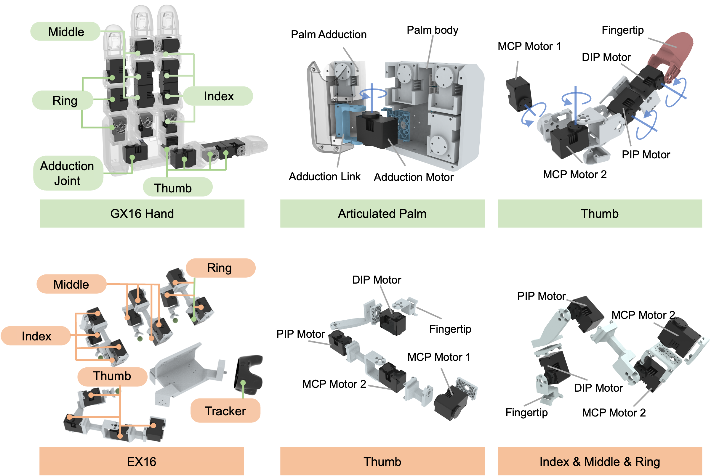

Dexterous manipulation is essential for robots to perform contact-rich tasks in the real world, yet low-cost and reproducible platforms that support the complete research workflow remain scarce. This paper presents GEX, an open-source platform for accessible dexterous manipulation research that integrates a fully actuated robotic hand, a matching wearable interface, and an end-to-end software stack for teleoperation and robot learning. GEX combines GX16, a four-finger anthropomorphic hand with 16 independently actuated degrees of freedom, and EX16, a 16-DoF exoskeleton glove for finger-motion capture and contact-triggered force feedback. Both devices use modular joint units and primarily 3D-printed components, with an estimated parts cost below $750 per device and under $1,500 for the complete hand-glove system. To bridge the different kinematic structures of the glove and the robotic hand, we formulate retargeting in a shared morphology-aligned workspace and train a neural inverse-kinematics model through a differentiable inverse- and forward-kinematics loop, where a Jacobian-Cycle regularizer complements fingertip-position and sparse joint-anchor supervision by promoting local consistency in displacement direction, gain, and cross-finger motion. We evaluate GEX through contact-rich teleoperation, imitation learning from human demonstrations, and simulation-to-real reinforcement learning. Teleoperation is assessed on computer-mouse tasks that are especially demanding for a robotic hand, namely scroll-wheel rotation, single-press clicking, transport to a target, and fingertip-to-enveloping regrasping, where the proposed method attains an average success rate of 79% over 20 trials per task, exceeding the strongest retargeting baseline by 10 to 25 percentage points on every task. These results indicate that GEX can serve as an accessible and reproducible testbed for dexterous teleoperation and robot skill learning.

GEX comprises the GX16 fully actuated dexterous hand with an articulated palm and the EX16 exoskeleton glove.
Simulation
Real